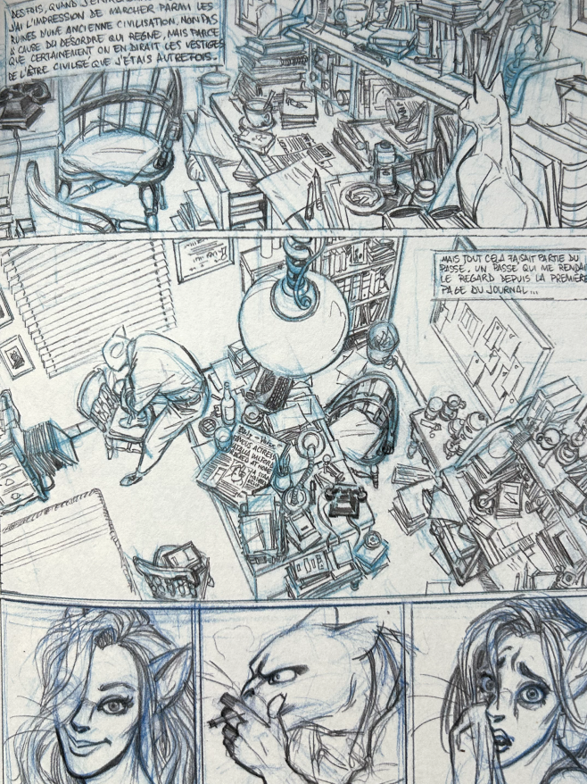
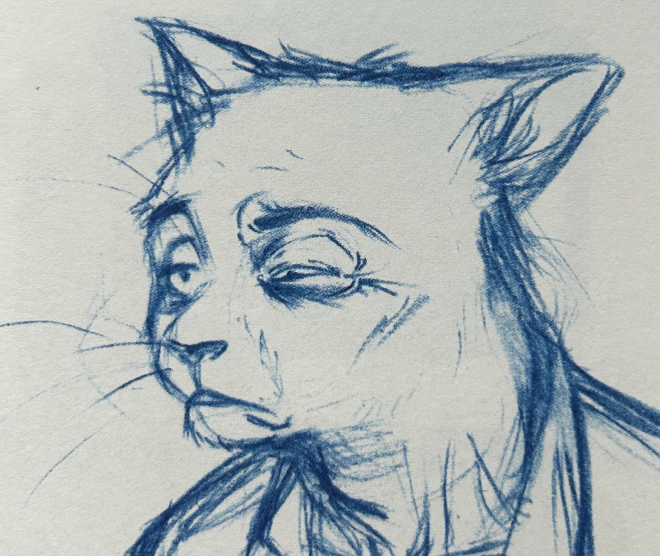
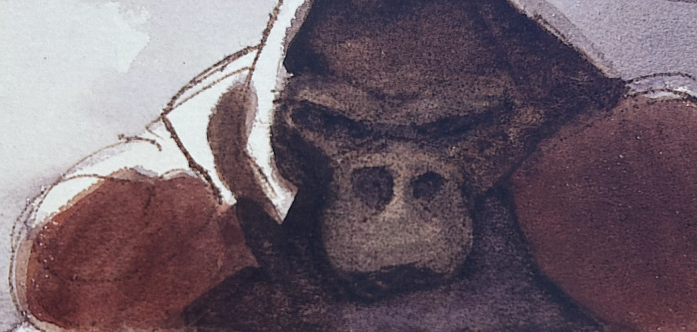
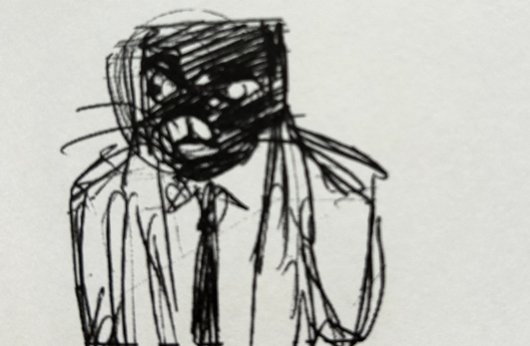
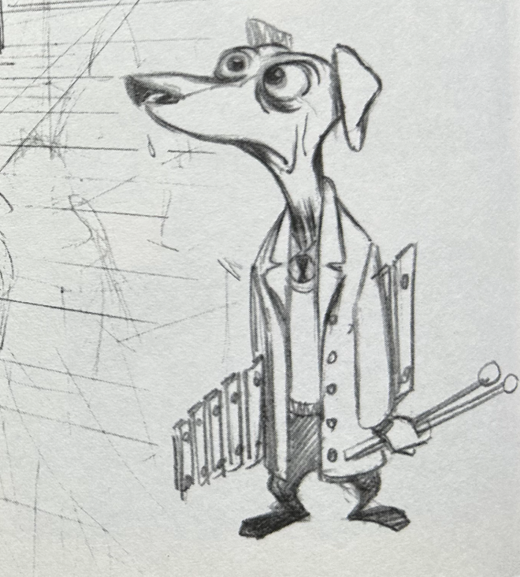
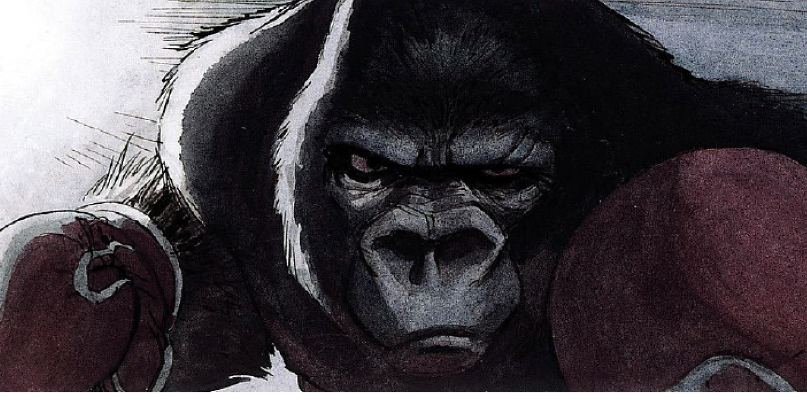

BLACKSAD
Tome 1 : Quelque part entre les ombres
Créateurs : Dias & Guarnido
Editeur : Dargaud
Blacksad est une série de bande dessinée policière et animalière en sept albums, de Juan Díaz Canales et Juanjo Guarnido. Les histoires prennent place dans une atmosphère de film noir, telle qu'elle a pu s'exprimer aux États-Unis dans les années 1950
SKETCH
Les croquis et tests à l'aquarelle de la BD Blacksad sont des études préparatoires de Juanjo Guarnido, explorant les personnages et les ambiances de la série. Ils révèlent le travail minutieux et l'utilisation de l’aquarelle pour créer l’atmosphère unique de cet univers noir et immersif.
     BLACKSAD
L’histoire des aquarelles
Créateurs : Dias & Guarnido
Editeur : Dargaud
La BD de croquis sur l'aquarelle de Blacksad est un recueil d’esquisses et d’études montrant le processus artistique de Juanjo Guarnido, qui utilise l’aquarelle pour donner vie aux personnages et aux ambiances de cette série noire anthropomorphique.